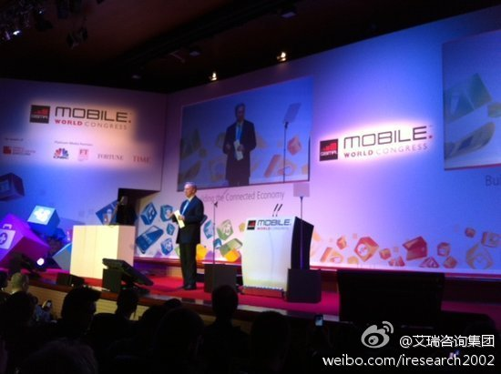

回复@艾瑞咨询集团:谢谢指点, 这个思路好. //@艾瑞咨询集团:回复@Ada李力:IT人更应该致力于让每一个人都能平等充分地接入互联网服务，这才是大爱啊！@艾瑞咨询:【谷歌施密特：互联网将导致未来社会阶级分化】在施密特的想象中，未来社会将会被划分为三个阶层：超级上网者、新中产阶级、“饥渴的大多数”。而划分的标准将是人们使用技术的方式和频率。但是，技术将能够“让弱者变强，让赤贫者拥有一些东西”。 网页链接 